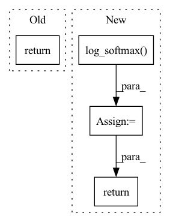

Pattern ID :1831
Before Change
pose_raw = self.pose(x)
affinity = self.affinity(x)
return pose_raw, affinity
models_dict = {After Change
pose_raw = self.pose(x)
pose_raw = self.pose(x)
pose_log = F.log_softmax( pose_raw, dim=1)
if self.predict_affinity:
affinity = self.affinity(x)
return pose_log, affinity
else:
return pose_log
In pattern: SUPERPATTERN
Frequency: 4
Non-data size: 4
Instances Fragment ID: 7089758
Project Name: rmeli/gnina-torch
Commit Name: 15d6493ca1672c55fafa4ca25323e4bf4faa7d50
Time: 2021-10-22
Author: rocco.meli@biodtp.ox.ac.uk
File Name: gnina/models.py
M Class Name: Dense
N Class Name: Dense
M Method Name: forward(2)
N Method Name: forward(2)
M Parent Class: nn.Module
N Parent Class: nn.Module
M File Name: gnina/models.py
N File Name: gnina/models.py
M Start Line: 502
M End Line: 505
N Start Line: 541
N End Line: 555
Before Change
attn = attn * mapping_mask
output = torch.bmm(attn, v)
return output, attn
After Change
if key_mask is not None:
attn = attn.masked_fill(key_mask == 0., -np.inf)
if attn_prior is not None:
attn = self.log_softmax( attn) + torch.log(attn_prior.transpose(1, 2) + 1e-8)
attn_logprob = attn.unsqueeze(1).clone()
attn = self.softmax(attn)
if query_mask is not None:
attn = attn * query_mask
attn_raw = attn.clone()
if mapping_mask is not None:
attn = attn * mapping_mask
output = torch.bmm(attn, v)
return output, (attn, attn_raw), attn_logprob
Fragment ID: 7089764
Project Name: keonlee9420/portaspeech
Commit Name: 814cdda1ebf7dc626708db2bcf20fdb9207f4345
Time: 2022-02-13
Author: keonlee9420@gmail.com
File Name: model/blocks.py
M Class Name: ScaledDotProductAttention
N Class Name: ScaledDotProductAttention
M Method Name: forward(8)
N Method Name: forward(7)
M Parent Class: nn.Module
N Parent Class: nn.Module
M File Name: model/blocks.py
N File Name: model/blocks.py
M Start Line: 615
M End Line: 623
N Start Line: 612
N End Line: 632
Before Change
h = self.fc1(embedded_sent.mean(1))
z = self.fc2(h)
return self.softmax(z)
// ====================================================================================================================
After Change
embedded_sent = self.embedding(text)
h = self.fc1(embedded_sent.mean(1))
z = self.fc2(h)
out = F.log_softmax( z, dim=1)
return out
// ====================================================================================================================
Fragment ID: 7089761
Project Name: tsingz0/pfl-non-iid
Commit Name: 9f3dd6c4ac5b7e8a15d07ef015eb8fd4f90beab3
Time: 2021-08-29
Author: 2719584131@qq.com
File Name: system/flcore/trainmodel/models.py
M Class Name: fastText
N Class Name: fastText
M Method Name: forward(2)
N Method Name: forward(2)
M Parent Class: nn.Module
N Parent Class: nn.Module
M File Name: system/flcore/trainmodel/models.py
N File Name: system/flcore/trainmodel/models.py
M Start Line: 471
M End Line: 473
N Start Line: 270
N End Line: 273
Before Change
final_feature_map = self.dropout(all_out)
final_out = self.fc(final_feature_map)
return self.softmax(final_out)
// ====================================================================================================================
After Change
all_out = torch.cat((conv_out1, conv_out2, conv_out3), 1)
final_feature_map = self.dropout(all_out)
out = self.fc(final_feature_map)
out = F.log_softmax( out, dim=1)
return out
// ====================================================================================================================
Fragment ID: 7089762
Project Name: tsingz0/pfl-non-iid
Commit Name: 9f3dd6c4ac5b7e8a15d07ef015eb8fd4f90beab3
Time: 2021-08-29
Author: 2719584131@qq.com
File Name: system/flcore/trainmodel/models.py
M Class Name: TextCNN
N Class Name: TextCNN
M Method Name: forward(2)
N Method Name: forward(2)
M Parent Class: nn.Module
N Parent Class: nn.Module
M File Name: system/flcore/trainmodel/models.py
N File Name: system/flcore/trainmodel/models.py
M Start Line: 522
M End Line: 524
N Start Line: 319
N End Line: 322